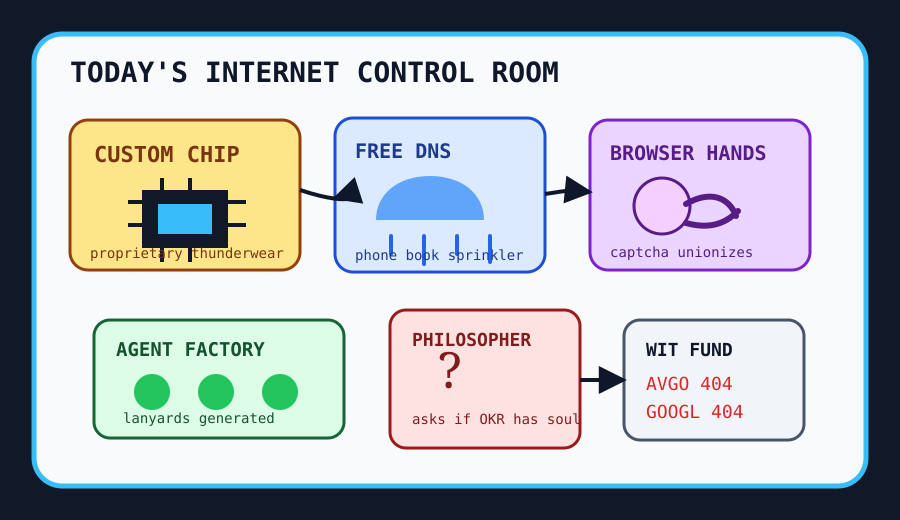

Front Page Oracle
The Mood of the Internet Today
The custom chip has hired a philosopher to explain the free DNS sprinkler.

2026-06-24
The Internet Believes
The internet woke up and decided silicon is a sacrament. Hacker News watched OpenAI unveil a Broadcom-built custom chip, then immediately paired it with Qualcomm buying Modular, because apparently every model now needs its own little cathedral and a procurement monk.
Infrastructure tried to act normal. Bunny made DNS free, PR spam was compared to early-2000s email spam, and Gemini computer use gave the browser tiny hands, which history will remember as the exact moment the captcha started asking for hazard pay.
GitHub was a convention center for synthetic employees: agentic video production, resume-scoring agents, one-command website cloning, meta-skill team factories, parallel agent fleets, and DESIGN.md scripture all wore the same lanyard and called it autonomy.
Meanwhile 45°C cooling for AI factories promised near-zero water use, AI labs hired philosophers, and Reddit r/popular delivered its usual image fog plus GTA disc custody court. This is probably what the robot weather desk meant by scattered moral thunderstorms.
Patch Notes for Humanity
Humanity v2026.6.24
Buffs
- Custom silicon aura +22% after the model requested proprietary thunderwear.
- DNS generosity +14% because the phone book became a sprinkler.
- Ruby AI plumbing +9% framework cardigan warmth.
Nerfs
- Open-source maintainer serenity -18% from PR spam cosplaying as helpfulness.
- Search-company vibes -7% after layoffs joined the dashboard as a metric.
- Dependency sovereignty -10% while crates.io and GitHub argued over who holds the clipboard.
Known Bugs
- Computer-use agents may click the wrong moral object and then write a retrospective.
- no-mistakes still increases the probability of one spectacular mistake by naming it.
- Everyone wants AI philosophers until the philosopher asks whether the OKR has a soul.
Source Trail
- Hacker News supplied custom chips, PostgreSQL maximalism, Modular acquisition incense, RubyLLM, Bunny DNS, PR spam, Gemini computer use, e-ink readers, data-center cooling, open-agent discourse, Krea image models, NixOS diet ISOs, SSH tunnels, developer typefaces, and AI philosophers.
- GitHub Trending supplied OpenMontage, daily stock analysis, Apple container, hiring-agent, website cloners, harness meta-skills, agent fleets, DESIGN.md, no-mistakes, and Hermes Agent.
- Google Trends RSS supplied Hulu/Bear searches, Dante celebrity fog, Yankees home-run numerology, USPS mail-ballot bureaucracy, and World Cup match sirens; Reddit r/popular supplied image fog, GTA disc custody court, Canadian highway speed-limit vibes, and geopolitics alarm static.